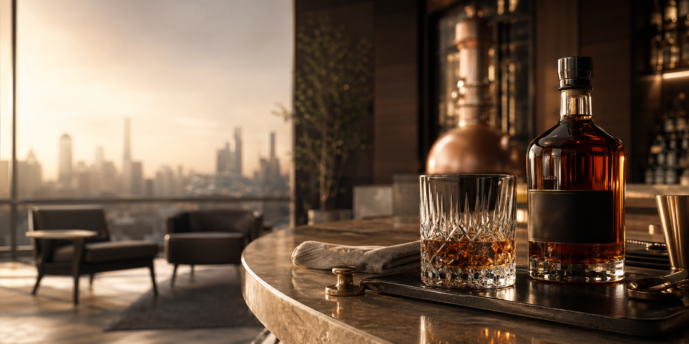
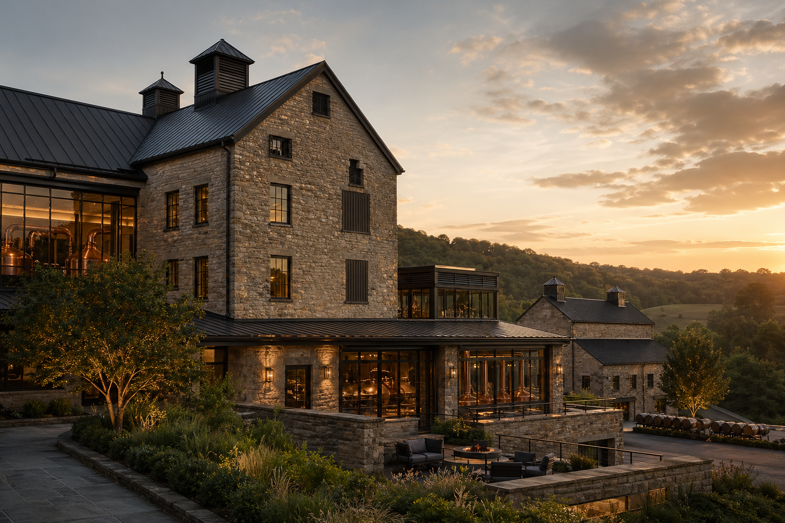
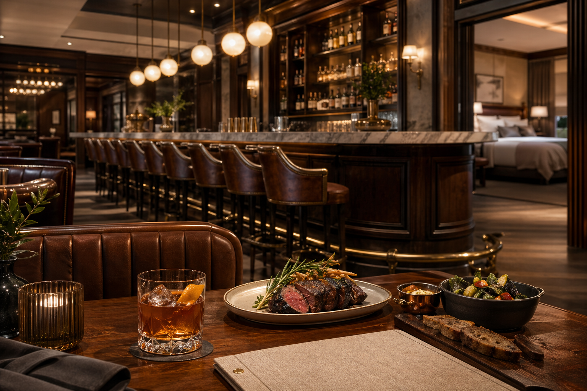
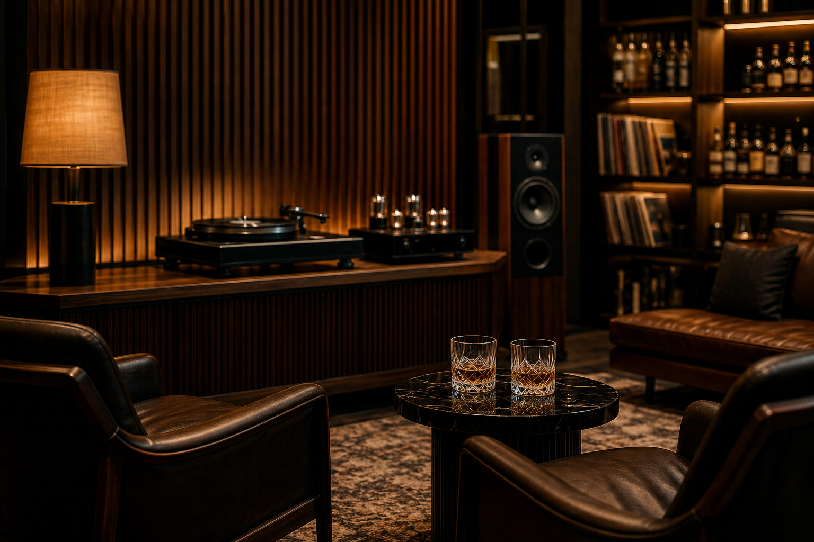
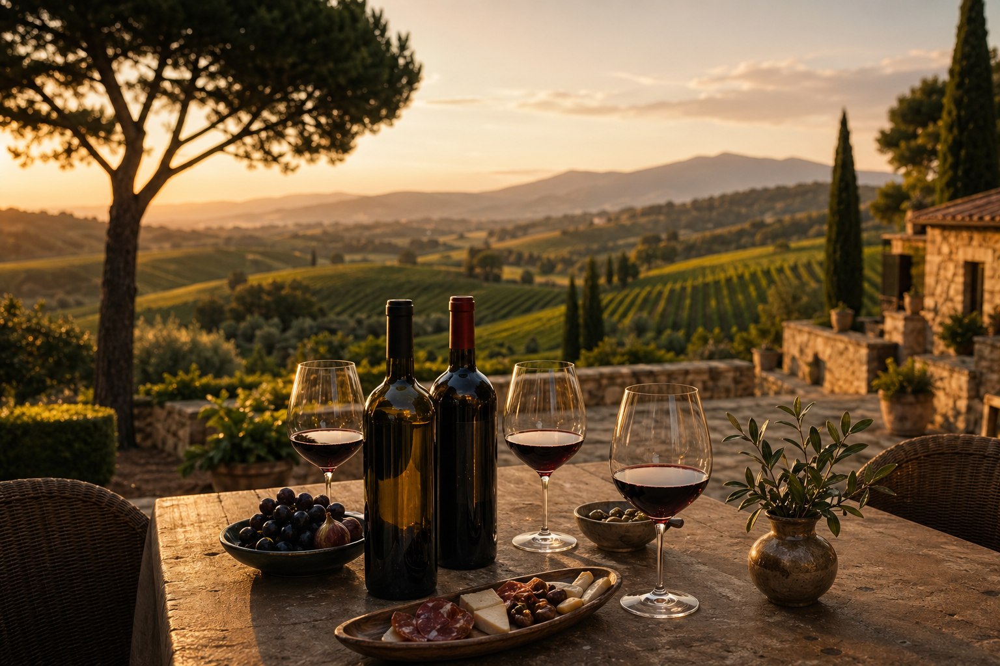
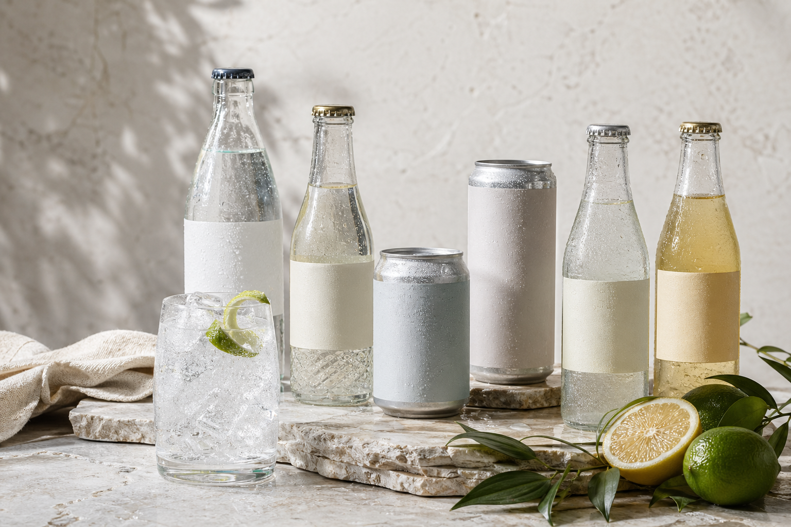

Kentucky heritage. Globally operated.
Bourbon at the core. Hospitality, beverages, and retail at scale.
Hatfield Group is a professionally managed house of spirits, restaurants, inns, private clubs, wine estates, beverages, provisions, and licensing operations headquartered in Louisville.


Company origin
Founded in the 1800s, acquired by Walker Holdings in 1978.
Hatfield began as a small local distillery in Kentucky before Walker Holdings acquired the business in 1978. The company has since expanded into restaurants, hotels, private clubs, wine estates, premium beverages, provisions, licensed products, and international distribution.
CEO
David Buckner
Operational, calm, and professional: Hatfield runs as a separate Louisville company with its own board, leadership, and corporate structure.
Five-year focus
Scale the footprint while protecting product quality.
- Franchise expansion for Bar & Grill and Inns
- Kentucky bourbon plus the long-term Scotland single malt programme
- Napa and Tuscany wine estate growth
- The Stave private club network in global cultural markets
- Limestone Springs, provisions, merchandise, and supply integration
Operating divisions
A diversified house of brands delivering serious hospitality.
01
Distillery & Spirits
Bardstown bourbon, rye, Cave Select, Single Barrel, and the original credibility anchor.

02
Bar & Grill
Sixteen company-owned bourbon-forward restaurants, with a fast-growing franchise programme.
03
Hatfield Inns
Eight company-owned boutique hotels built around bourbon hospitality and regional character.

04
The Stave
Eight premium members' clubs with serious listening rooms, whiskey culture, and global heat.
Open The Stave
05
Still House
Destination restaurants on distillery grounds in Bardstown and Perthshire.

06
Hatfield Wines
Napa and Chianti Classico estates with tasting rooms, restaurants, and guesthouses.

07
Limestone Springs
Premium tonics, mixers, sodas, sparkling and still waters distributed in 30+ countries.
08
Hatfield Scotland
Perthshire distillery producing gin now while its Scotch single malt matures.
09
Licensing & Provisions
Franchise operations, condiments, bitters, barware, apparel, and mandatory supply channels.
Division spotlight
Hatfield Distillery & Spirits
The Bardstown distillery is Hatfield's original business: a respected Kentucky bourbon house with national and international distribution, led by Master Distiller Carolyn Hatfield-Moore.
- Revenue
- ~$115M
- Role
- Original credibility anchor
- Reach
- All 50 states, UK, EU, Japan, Australia, duty-free
Integrated channels
Every division strengthens the next one.
Bar & Grill, Inns, Still House, and The Stave become trial channels for spirits, wines, mixers, and provisions.
Bourbon, Limestone Springs, wines, condiments, bitters, glassware, and apparel travel through owned and retail channels.
Franchise partners extend the footprint while remaining mandatory customers for Hatfield supply.
Napa, Tuscany, Bardstown, and Perthshire give the brand physical places with hospitality depth.
Latest updates
Company growth across spirits, hospitality, beverages, and estates.
Product system
From bottle shelf to bar programme.
The full Hatfield range now spans bourbon, rye, gin, maturing Scotch, Napa and Tuscan wines, Limestone Springs waters and mixers, provisions, barware, apparel, memberships, and destination experiences.